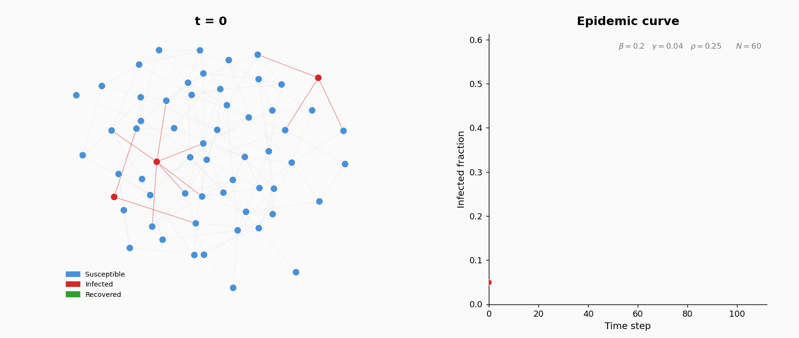

Simulation-Based Inference for an Adaptive-Network Epidemic Model

Introduction
When an infectious disease spreads through a population, transmission occurs along a contact network: a graph where nodes are individuals and edges represent contacts along which infection can spread. A natural question is whether we can estimate key parameters (transmission rate, recovery rate) from observed data. In simple models, standard statistical methods apply. But when individuals adapt their behavior during the epidemic, for instance by avoiding infected contacts and forming new ones, the network changes dynamically. This creates a feedback loop that makes the likelihood function intractable.
In this project, you are given a stochastic SIR epidemic model on an adaptive network, a simulator that implements it, and observed data generated with unknown parameter values. Your goal is to infer the unknown parameters using simulation-based inference (SBI).
The Model
A population of \(N = 200\) agents interact on an undirected contact network. Each agent is in one of three states: S (susceptible), I (infected), or R (recovered, permanently immune). At the start of the simulation, the contact network is generated as an Erdos-Renyi random graph \(G(N, p)\): for each pair of agents, an edge is included independently with probability \(p\). The parameters are: \(N = 200\) and \(p = 0.05\). This gives an expected average degree (number of contacts per agent) of approximately \((N-1) \times p \approx 10\).
At \(t=0\), five agents chosen uniformly at random are infected; the rest are susceptible.
Three parameters govern the dynamics:
| Parameter | Meaning | Prior |
|---|---|---|
| \(\beta\) | Infection probability per S–I edge per time step | \(\text{Uniform}(0.05,\; 0.50)\) |
| \(\gamma\) | Recovery probability per infected agent per time step | \(\text{Uniform}(0.02,\; 0.20)\) |
| \(\rho\) | Rewiring probability per S–I edge per time step | \(\text{Uniform}(0.0,\; 0.8)\) |
The simulation runs for \(T = 200\) discrete time steps. At each step, three operations are applied synchronously (all events within a step are computed before state updates):
- Infection. Each susceptible neighbor of an infected agent becomes infected with probability \(\beta\). New infections are applied after all attempts are evaluated.
- Recovery. Each infected agent (excluding those just infected this step) recovers with probability \(\gamma\).
- Rewiring. For each S–I edge, with probability \(\rho\) the susceptible agent breaks the edge and forms a new one to a uniformly random non-neighbor. This models behavioral avoidance: susceptible individuals cut contact with infected neighbors.
Provided Simulator
A Python implementation of the model is available here to get you start. Read the code carefully and make sure you understand the model before using the simulator for inference. You may modify or optimize the simulator if you wish, but the update rules must remain the same. Optimizing the simulator for speed can be useful (but not strictly necessary) for this project (eg. using Numba or other similar strategies).
Observed Data
You are given data from \(R = 40\) independent realizations, all generated with the same \((\beta, \gamma, \rho)\). The contact network is never observed. Three aggregate measurements are available:
| File | Contents |
|---|---|
infected_timeseries.csv |
Columns: replicate_id, time, infected_fraction |
rewiring_timeseries.csv |
Columns: replicate_id, time, rewire_count |
final_degree_histograms.csv |
Columns: replicate_id, degree (0–30, clipped), count |
What You Must Do
Your report should contain the following sections.
1. Introduction
Briefly describe the model, the data, and the inference problem. Explain why the likelihood is intractable and why simulation-based methods are needed.
2. Basic Rejection ABC
Implement rejection ABC to obtain an approximate posterior over \((\beta, \gamma, \rho)\). The algorithm repeatedly draws parameters from the prior, simulates data, computes summary statistics, and accepts parameters whose simulated summaries are close enough to the observed ones, as described in class. You will need to make choices about summary statistics, distance function, normalization, and tolerance. Document these choices and present the resulting approximate posterior (marginal histograms, pairwise plots). Discuss the quality of the estimates.
3. Summary Statistics Design
The choice of summary statistics is one of the most important design decision in ABC. Poorly chosen summaries lose information about the parameters; good summaries compress the data while retaining discriminative power.
A key challenge in this model: \(\beta\) and \(\rho\) can both suppress the epidemic through different mechanisms. Summary statistics based only on the infected fraction time series cannot fully separate these two parameters. The rewiring counts and degree histograms carry additional information.
Investigate which summaries are informative for which parameters. Compare different sets of summaries and show how the choice affects the posterior.
4. Advanced Methods
You are tasked with exploring more advanced simulation-based inference methods. The goal is to improve the quality of your parameter estimates beyond what basic rejection ABC achieves. For example, some possible approaches (but these are by no means the only ones) include:
- Regression adjustment. Post-processing ABC samples using local linear regression to correct for the gap between simulated and observed summaries. This can sharpen posteriors without additional simulations. See Beaumont, Zhang, and Balding (2002).
- ABC-MCMC. Instead of independent rejection sampling, use a Markov chain Monte Carlo sampler within the ABC framework. This can be more efficient than rejection ABC because proposed parameters are informed by the current state of the chain, rather than drawn blindly from the prior. The original algorithm is due to Marjoram et al. (2003).
- SMC-ABC (Sequential Monte Carlo ABC). Run ABC with a sequence of decreasing tolerance thresholds, using a population of particles that are resampled and perturbed at each step. This is often more efficient than rejection ABC for reaching small tolerances. See, e.g., Sisson, Fan, and Tanaka (2007) or Beaumont et al. (2009).
- Synthetic likelihood. Instead of comparing summary statistics through a distance function, assume that the summary statistics follow a multivariate normal distribution (conditional on the parameters) and estimate the mean and covariance from repeated simulations. This defines an approximate likelihood that can be used in standard MCMC. See Wood (2010).
You are encourage to explore widely, do sanity checks, and compare the results of different methods. The goal is to demonstrate that you understand the limitations of basic ABC and how more advanced methods can improve inference quality.
Practical Details
Report Submission: A single submission per group on Canvas: a PDF report (at most 10 pages, including figures and references). The report should not include any code and should include the name and student number of all group members. You are encouraged to use LaTeX, although this is not compulsory. A template is available here; with your NUS email you can get a free Overleaf account.
Code Submission: create a github repository (referenced in your report) for reproducing your analysis.
Grading.
- 70% report content: quality and breadth of numerical experiments, critical analysis, depth of exploration.
- 30% code quality: well-documented, readable, reproducible.
- Using an LLM assistant for writing and code is fine. All external sources must be cited.
The report and code should be your own work. Discussion with other groups is encouraged; copying is not. Do not use code you do not understand. A deep understanding of the methods and the ability to explain them clearly is what matters.